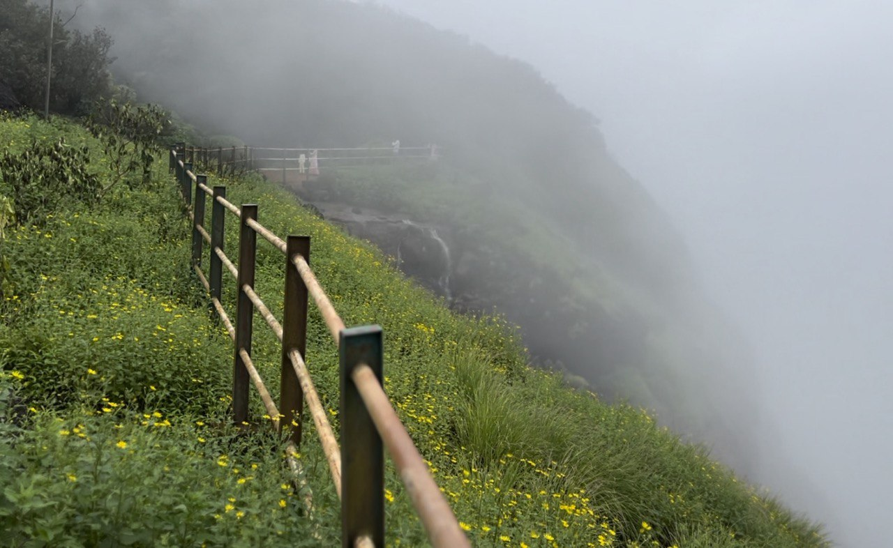
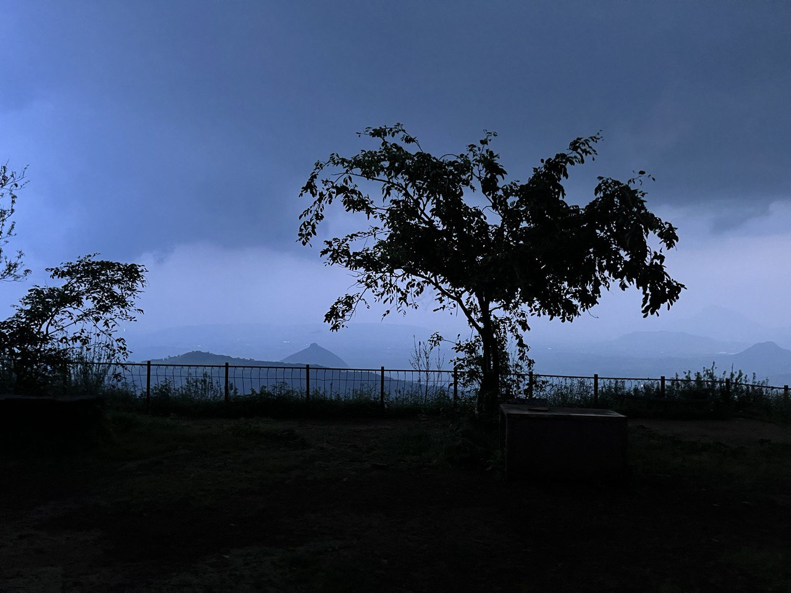
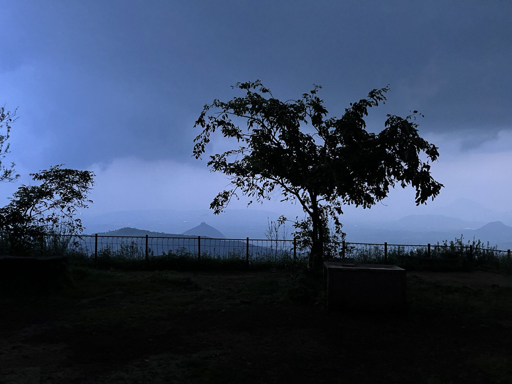
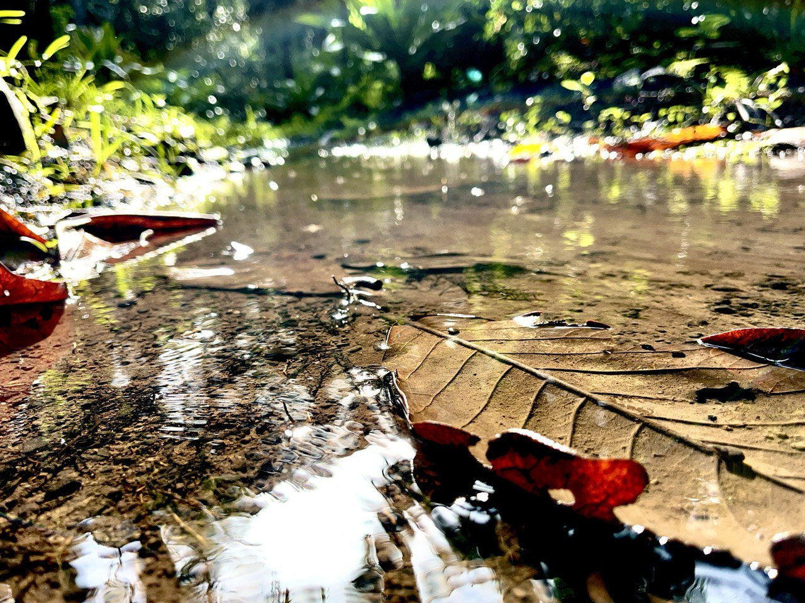
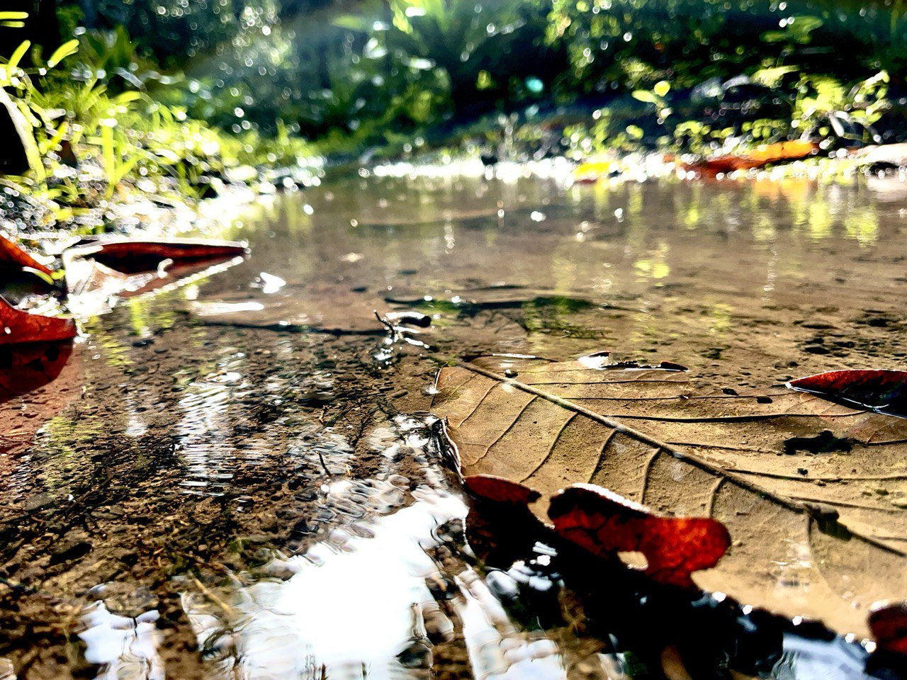
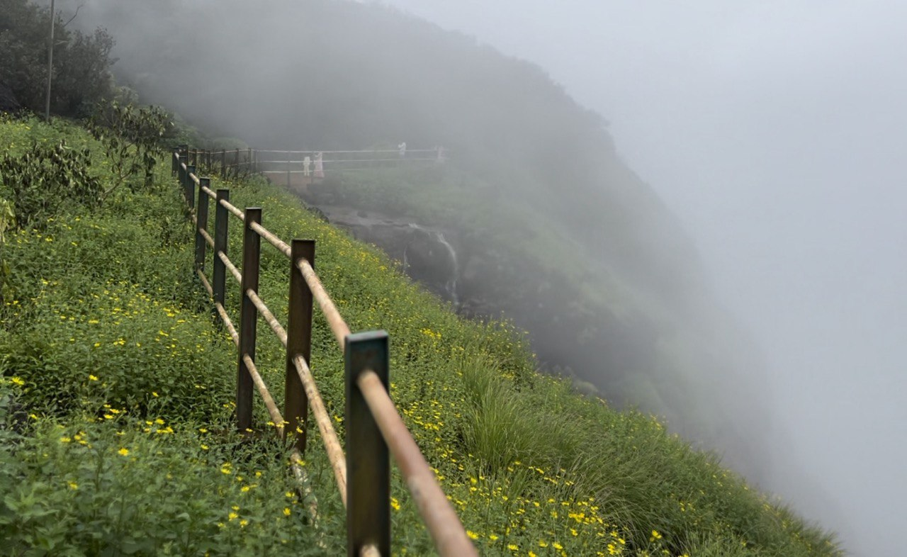
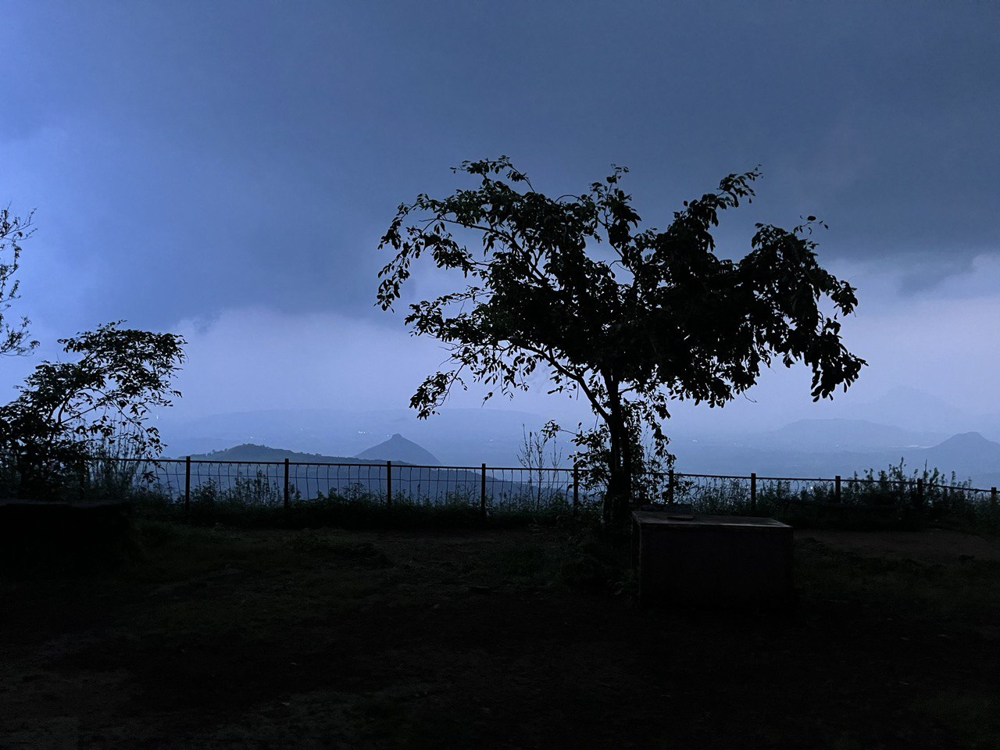
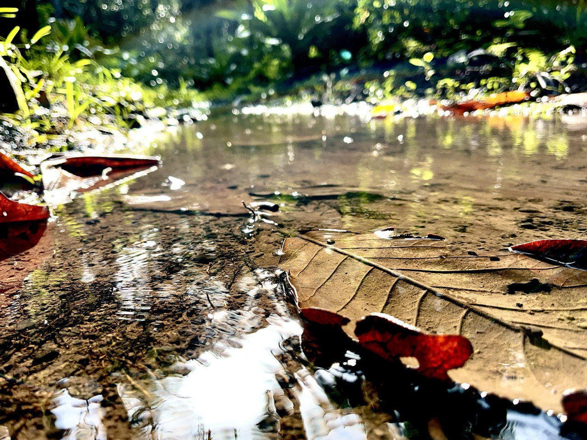

Photograpgy

 

 





Welcome to my personal gallery of favorites. Like many, Im instinctively drawn to capture natures finest moments through
the lens of my camera.
This collection represents my best efforts to encapsulate and do justice to these breathtaking scenarios.
Candidly, my forte isnt in capturing portraits, hence the noticeable absence of people in my photos. Enjoy the view!